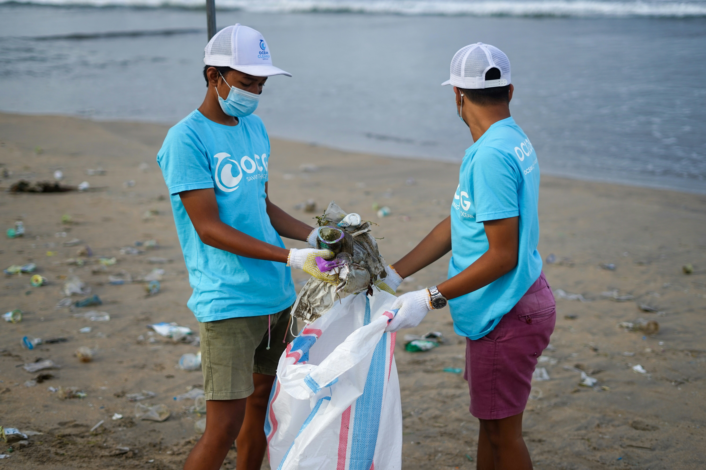

Restoring Bali's Harmony Through
Smart Waste Management
Inspired by Tri Hita Karana, uniting people, nature, and technology to restore balance in Bali.
Inspired by Tri Hita Karana, uniting people, nature, and technology to restore balance in Bali.
Di balik keindahan Bali, ada masalah sampah yang makin serius. Kondisi ini mulai berdampak ke alam, tempat suci, kesehatan masyarakat, sampai keseimbangan hidup masyarakat Bali.
Setiap hari Bali menghasilkan ribuan ton sampah, dan jumlahnya terus naik karena pariwisata dan perkembangan kota.
Hampir setengah sampah di Bali masih berakhir di pembuangan terbuka atau bocor ke lingkungan sekitar.
Sampah plastik yang masuk ke laut Bali setiap tahun mengancam ekosistem laut dan pariwisata pesisir.

Jutaan wisatawan datang setiap tahun, tapi kapasitas pengolahan sampah belum mampu mengimbangi.
Sungai yang melewati area pura mulai tercemar, mengganggu kesucian dan lingkungan sekitar.
Air yang tercemar dan pembuangan liar berdampak ke pertanian, perikanan, dan kesehatan masyarakat.
Kerusakan lingkungan juga mempengaruhi keseimbangan hidup yang menjadi bagian penting budaya Bali.